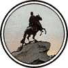

|

|
>> Содержание / Список кланов /
  SPB SPB
Тьма и Свет... они всегда находились в шатком равновесии, как два равных по силе воина. Иногда чаша весов склоняется в одну сторону, но тут же другая сторона отыгрывается, набирая временно упущенные очки и вот - вновь равновесие. Балланс на грани, тонкая нить...
И всё же История помнит в основном темные времена, смутные века, войны, потоки крови, постоянное присутствие некой Угрозы в Небе, в Земле, в Воде... Тьма преследует не менее благородные цели, чем Свет, и обе стороны стремятся как минимум сохранить равновесие. Тьма дает своим сторонникам огромную, страшную, всесокрушающую силу! Но не менее страшно карает она предателей, лицемеров и двурушников. Подлость - не есть характерная черта истинного Тёмного Воина. Честный бой, поединок, в котором Тьма возьмет своё - вот Цель, к которой должно стремиться! И Тьма не оставит своих, тех кто верен, честен и смел. Она примет их в свои объятия и впустит в свое сердце, в свою Цитадель.
А посреди Тьмы, перевес которой чувствуется в каждом мгновении новой и новейшей Истории стоит ГОРОД.
300 лет он стоит в сумраке, непогоде, исхлестываемый дождями, заметаемый снегом, с низким, покрытым мятущимися темными тучами небом. Его воздвигли на болоте, которое поглотило немало душ и таит в себе немало кровавых тайн. Фундамент ГОРОДА был выстроен на костях и из костей работающих на его строительстве рабов-крепостных. Город был заложен и строился во время знаменитой Столетней Войны и вобрал в себя всю Тёмную Силу тех времен.
Первой была построена крепость, и, как знамение равновесия, признаваевомого Тьмой на ее шпиле был воздвигнут ангел, символ света среди Тьмы, потому что Тьма ценит и уважает своих заклятых врагов. И наречен был ГОРОД его создателем, величайшим из царей и правителей всех времен, в честь святого Петра, и стал он - Санкт-Петербургом, Столицей необъятного, великого государства.
ГОРОД шел, жил и рос сквозь века. Менялись времена, рождались и умирали тираны, на смену им приходили иные... Дважды сменился строй в стране, трижды менялось имя великого ГОРОДА. Он выдержал миллионы смертей, сотни тысяч снарядов и пуль, голод, разруху, он перестал быть Столицей, прославился криминалом... и он стоял, отвоевав тем право называться Вечным.
Но вот настали новые времена. Родились новые жители в нем. Пришло время возрождать былое имя и славу.
И встретились в виртуальном мире, незнающем границ, дети Великого ГОРОДА Петра, и собрались они вместе, и слились в братство, взяв себе имя "SPB Клан".
Болью отзывалось в их сердцах происходящее с любимым ГОРОДОМ. Они всей душой были не согласны со вторым местом, отведенным Питеру в необъятной стране. И сказали они:
"Мы не хотим быть вторыми! Мы хотим, что бы наш ГОРОД снова стал Главной столицей Великого государства. Настала пора выйти из тени и занять по праву принадлежащее нам место. Наши люди уже у власти, мы набираем силу. Мы объединились в одну семью, чтобы защитить всех, кто нуждается в нас и подчинить себе всех, кто идет против нас. У вас еще есть выбор - быть с нами или быть подчинёнными нами."
И люди стали стекаться в ряды SPB Клана, несмотря ни на злословие, ни на противостояние, ни на зависть, которые ставили множественные препоны на пути развития и продвижения к заветной цели SPB Клана, ибо сама Тьма питала их своей силой. И так будут они идти вперед. И не запятнают они бесчестием ни имя SPB Клана, ни славное имя родного ГОРОДА, ни саму Тьму.
И так будет отныне,
Во Славу Великого Питера
Официальный сайт клана: http://www.spbklan.ru/
|
 |
|